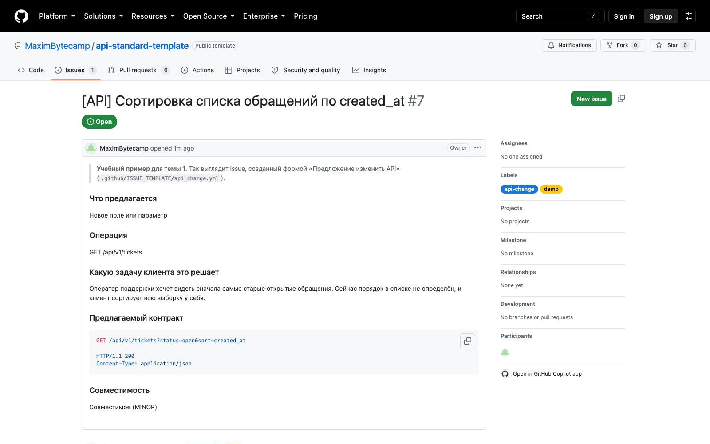
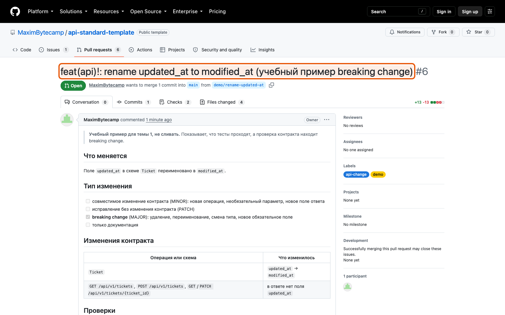
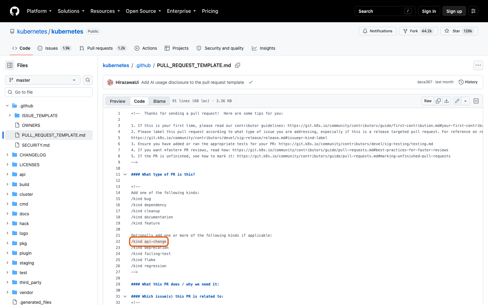
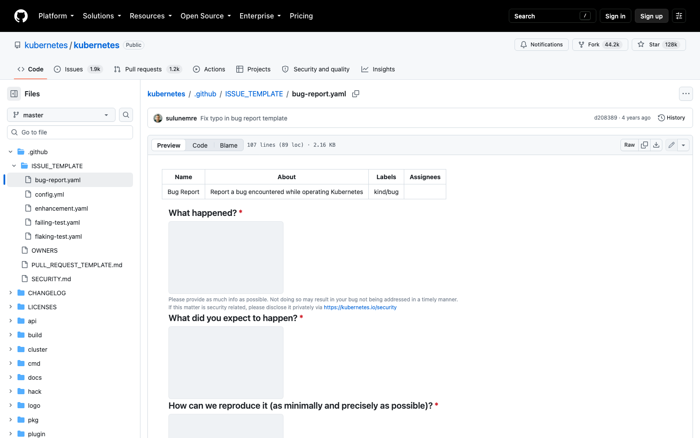

Справочник «Стандартизация HTTP API» · модуль 7 · Репозиторий API
Глава 7.1
Шаблон PR
и формы issue
Изменение контракта начинается не с кода, а с разговора. Чтобы разговор каждый раз не начинался с нуля, его форму задают заранее: форма issue собирает предложение, шаблон pull request — проверки перед объединением. Два текстовых файла, которые заменяют десяток повторяющихся вопросов.
«Хороший шаблон задаёт вопросы, которые вы всё равно зададите, — только раньше и один раз.»
- Категория
- Репозиторий
- Уровень
- Базовый
- Связанные главы
- 6.4 CI · 7.2 Владельцы кода · 5.4 CHANGELOG и ADR
- Зачем это знать
- Чтобы изменение контракта обсуждалось до реализации, а не после
§1API First: сначала договорились
Подход, при котором контракт обсуждают и описывают до написания кода, называют API First. Смысл в порядке действий: сначала договорились, как будет выглядеть операция, потом её реализовали.
- операция уже написана
- обсуждение начинается на ревью
- замечание = переделка
- проще согласиться, чем спорить
- обсуждается предложение
- замечание = правка в тексте
- реализуется согласованное
- ревью проверяет соответствие
Разница в цене замечания. Поменять имя поля в обсуждении — минута; поменять его же, когда операция написана, покрыта тестами и выгружена в описание, — полдня и неохотно. Поэтому в учебном проекте порядок записан прямо в форме предложения.
§2Форма предложения изменить API
Файл .github/ISSUE_TEMPLATE/api_change.yml описывает форму, которую GitHub показывает вместо пустого поля ввода.
name: Предложение изменить API description: Новая операция, поле, параметр или изменение поведения существующей операции title: "[API] " labels: ["api-change"] body: - type: markdown attributes: value: | Контракт сначала обсуждается, потом реализуется (API First). Прочитайте docs/API_STYLE_GUIDE.md и docs/VERSIONING.md перед заполнением.
[API] — предложения об изменении контракта видно в списке с первого взгляда.узнаваемость- type: dropdown # что предлагается: операция / поле / поведение / удаление - type: input # операция: метод и путь - type: textarea # какую задачу клиента это решает - type: textarea # предлагаемый контракт - type: checkboxes # совместимость проверена по docs/VERSIONING.md
Обратите внимание на подпись к третьему полю: «Опишите ситуацию, а не решение». Это самая полезная строка формы — она разворачивает разговор от «добавьте поле priority» к «нам нужно показывать срочные обращения сверху», а у второй формулировки может оказаться другое, лучшее решение.
§3Почему форма, а не пустое поле
Свободный текст в issue выглядит гибче, но у него есть постоянная цена: недостающие сведения выясняются в переписке, по одному вопросу за раз.
| Без формы | С формой |
|---|---|
| «Не работает создание тикета» | Операция, шаги, ожидаемое и фактическое, X-Request-Id |
| Три уточняющих вопроса и два дня | Всё нужное в первом сообщении |
| Автор не знает, что важно | Форма сама подсказывает, что важно |
| Метки расставляются руками | Метка и заголовок ставятся сами |
В проекте три формы: предложение изменить API, сообщение об ошибке и проблема с документацией. Плюс файл config.yml, который убирает возможность создать issue без формы и добавляет ссылку на приватное сообщение об уязвимости — об этом в главе 7.2.
§4Шаблон pull request
Файл .github/PULL_REQUEST_TEMPLATE.md подставляется в описание каждого нового изменения. Первый вопрос в нём — о совместимости.
## Тип изменения
- [ ] совместимое изменение контракта (MINOR): новая операция, необязательный параметр,
новое поле ответа
- [ ] исправление без изменения контракта (PATCH)
- [ ] **breaking change** (MAJOR): удаление, переименование, смена типа,
новое обязательное поле
- [ ] только документацияАвтор обязан выбрать один пункт, и это заставляет его сделать вывод о совместимости до того, как о ней скажет oasdiff. Расхождение между отметкой автора и выводом сборки — само по себе сигнал: либо автор не понял своё изменение, либо политика совместимости описана неточно.
## Изменения контракта
| Операция или схема | Что изменилось |
|---|---|
| PATCH /api/v1/tickets/{ticket_id} | добавлен приём If-Match, ответ 412 |Таблица нужна ревьюеру: список изменённых файлов показывает, где правки, но не что они означают для клиента. Одна строка на операцию — и смысл изменения виден до чтения кода.
§5Чек-лист проверок
## Проверки - [ ] контракт выгружен: `python scripts/export_openapi.py` - [ ] тесты проходят: `pytest` - [ ] Spectral без замечаний - [ ] изменение записано в `CHANGELOG.md`, раздел `[Unreleased]` - [ ] у новых ответов с ошибкой есть страница вида проблемы в `scripts/build_docs.py` - [ ] устаревающие элементы помечены `deprecated: true`, указаны замена и дата отключения - [ ] для архитектурного решения добавлен ADR в `docs/adr/`
Семь пунктов, и каждый — правило из предыдущих модулей. Первые три дублируют сборку намеренно: автор прогоняет их у себя и не занимает очередь сборки заведомо красным изменением.
А вот четыре последних сборка проверить не может, и в этом их ценность:
type.глава 4.1Чек-лист — это память команды о том, что нельзя автоматизировать. Каждый его пункт когда-то был забыт, и цена этого забывания оказалась выше, чем одна галочка.
§6Раздел «Для потребителей API»
## Для потребителей API <!-- Что клиентам нужно сделать после выпуска. Если ничего — напишите «ничего». -->
Короткий раздел, который делает большую работу. Он заставляет автора посмотреть на своё изменение глазами того, кто этим API пользуется, — и сформулировать ответ словами.
Ответ «ничего» здесь полноценный и встречается чаще всего. Важно, что он написан: значит, вопрос задавали. А если ответ не «ничего», текст почти готов к переносу в CHANGELOG.md — там нужна ровно такая же формулировка.
§7Как это выглядит вживую

[API], метка api-change проставлена автоматически, поля разложены по разделам. Ничего из этого автору вручную делать не пришлось.
Это изменение — то самое демонстрационное, где убрано обязательное поле title из главы 6.4. Оно намеренно оставлено незакрытым: по нему видно и заполненный шаблон, и красную задачу breaking-changes рядом.
§8Как делают другие
| Проект | Что в шаблоне | Чему стоит поучиться |
|---|---|---|
| Kubernetes | Тип изменения, заметка для примечаний к выпуску, ссылки на документацию | Отдельное поле для текста, который попадёт в примечания к выпуску |
| OpenAPI Initiative | Ссылка на обсуждение, тип правки спецификации | Изменение стандарта требует ссылки на состоявшийся разговор |
| Azure | Подробный чек-лист требований к описанию API | Чек-лист прямо повторяет пункты их свода правил |


§9Частые ошибки
§10Проверьте себя
- Что такое API First и почему при таком порядке замечание стоит дешевле?
- Зачем в форме предложения просят описать ситуацию, а не решение?
- Что даёт автоматическая метка и префикс в заголовке issue?
- Почему первый вопрос шаблона pull request — о типе изменения?
- Назовите четыре пункта чек-листа, которые сборка проверить не может, и объясните почему.
- Какую работу делает раздел «Для потребителей API», если ответ в нём — «ничего»?
api_change.ymlbug_report.ymldocs_problem.ymlconfig.ymlчто меняетсятип изменениятаблица контрактапроверкидля потребителейсначала договорпотом реализацияшаблон короче измененияСправочник «Стандартизация HTTP API» · модуль 7 · глава 7.1Макаров Максим Николаевич